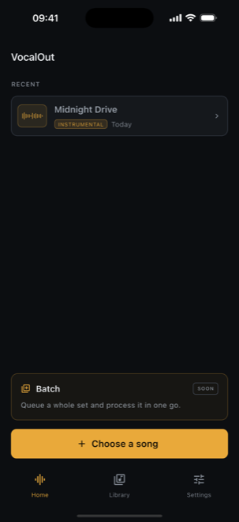
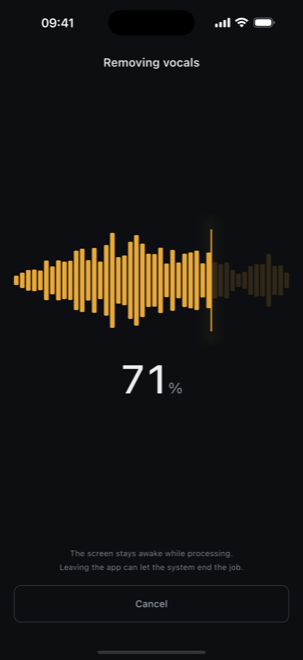

VocalOut으로 노래 보컬 제거하기 — 4단계
전체 흐름은 곡 선택 → 모드 선택 → 처리 → 듣기입니다. 계정도, 업로드도 없고, 처리할 수 있는 곡 수에도 제한이 없습니다.
곡 고르기
VocalOut을 열고 폰에 이미 있는 곡을 고릅니다. 스트리밍 서비스와 연결되어 있지 않으므로 곡은 먼저 기기에 저장되어 있어야 합니다. 다운로드한 파일, 내보낸 파일, 누군가 보내 준 파일 모두 됩니다.

남길 소리 고르기
VocalOut은 가져온 파일의 파형, 길이, 형식과 함께 두 가지 분리 모드를 보여 줍니다. 보컬을 지운 깔끔한 반주(인스트루멘털)를 뽑거나, 보컬 트랙만 따로 분리할 수 있습니다. 잘못 건드릴 슬라이더나 스템 개수 설정은 없습니다. 하나를 고르면 끝입니다.

기기 안에서 처리하기
분리는 폰 자체 프로세서에서 이루어지므로 업로드할 것도, 서버 대기열도 없습니다. 비행기 안이든, 합주실이든, 신호가 잡히지 않는 지하든 똑같이 작동합니다. 걸리는 시간은 기기에 따라 다르며, 진행률 숫자로 얼마나 진행됐는지 볼 수 있습니다.

결과 들어 보기
완성된 트랙은 라이브러리에 저장되고 그 자리에서 바로 재생됩니다. 파형을 움직여 원하는 부분으로 넘기고, 몇 번이든 다시 들어 보세요. 처리와 재생은 무제한 무료이므로, 무언가를 결제하기 훨씬 전에 결과가 쓸 만한지 직접 확인할 수 있습니다.

VocalOut — 보컬 제거 앱
폰에 있는 어떤 노래든 깔끔한 반주 MR로 바꿔 주는 오프라인 보컬 제거 앱입니다. AI가 기기 안에서 실행되므로 업로드도, 계정도 없고, 처리는 무제한 무료입니다.
기기 안에서 처리하는 것이 왜 중요한가
온라인 보컬 제거 사이트는 대부분 곡 전체를 서버에 올려 처리한 뒤 파일을 돌려줍니다. VocalOut은 그렇게 하지 않습니다. AI 모델이 앱 안에 들어 있고 폰에서 실행되므로 음악이 기기 밖으로 나가지 않고, 기다려야 할 서버도 없습니다. 계정도, 크레딧도, 곡당 제한도 없는 이유가 바로 여기에 있습니다.
곡 전체를 업로드
처리 전에 곡이 웹사이트로 전송됩니다. 회원가입이나 크레딧 차감, 서버 대기열을 거쳐야 하는 경우가 많습니다.
폰 안에서 처리
VocalOut은 분리를 기기에서 직접 실행합니다. 고른 곡도, 결과물도 기기 밖으로 나가지 않으며 원하는 만큼 처리할 수 있습니다.
깔끔한 반주 MR은 어디에 쓸까
보컬이 빠지면 반주 트랙은 이렇게 활용할 수 있습니다.
- 연습과 공연 — 원곡 반주에 맞춰 노래하거나 악기를 연주
- 노래방 — 집에서 MIDI 반주 대신 원곡 반주로
- 커버와 영상 콘텐츠 — 깔아 둘 반주가 필요할 때
- 리믹스, 매시업, 샘플링 — 깔끔한 스템에서 시작
한 가지 유의할 점이 있습니다. 처리하는 음악에 대한 권리는 사용자가 책임져야 합니다. VocalOut은 이미 기기에 가지고 있는 파일을 대상으로 작동합니다.
자주 묻는 질문
음악이 어딘가에 업로드되나요?
아니요. AI 모델이 앱 안에 들어 있고 폰에서 실행되므로 서버를 거치는 단계가 아예 없습니다. 음악은 기기 밖으로 나가지 않습니다.
처리할 수 있는 곡 수에 제한이 있나요?
없습니다. 처리와 재생은 앞으로도 계속 무제한 무료입니다. Pro는 결과물을 앱 밖으로 내보내는 기능만 열어 줍니다.
한 곡에 시간이 얼마나 걸리나요?
기기에 따라 다릅니다. 파일을 내려받는 것이 아니라 폰이 실제로 연산을 하기 때문입니다. 처리하는 동안 진행률이 표시됩니다.
노래 파일은 어디서 가져오나요?
기기에 이미 저장된 파일에서 가져옵니다. VocalOut은 어떤 음악 서비스와도 연결되어 있지 않고 음악을 다운로드하거나 스트리밍할 수 없으므로, 먼저 노래를 폰에 저장해 두어야 합니다.
VocalOut은 무료인가요? iPhone과 Android에서 쓸 수 있나요?
VocalOut은 무료로 다운로드할 수 있고 계정이나 크레딧이 없으며, 처리와 재생은 무제한 무료입니다. VocalOut Pro는 결과물을 32비트 원본 품질로 내보내는 기능을 여는 1회성 구매이며 구독이 아닙니다. iPhone은 App Store, Android는 Google Play에서 받을 수 있습니다.
노래를 반주 MR로 바꿔 보세요.
설치한 뒤 첫 곡을 분리하는 데는 몇 분이면 충분하고, 들어 보는 데는 비용이 들지 않습니다. 궁금한 점이 있으면 앱을 만든 사람이 직접 답해 드립니다.
grayforge.dev@gmail.com